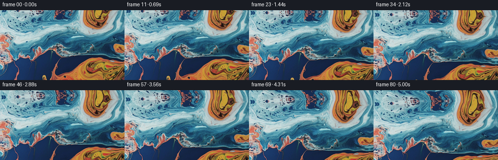
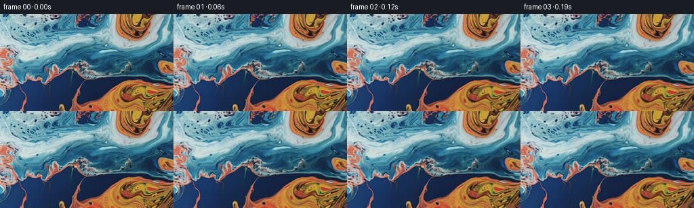

候选 01 · 2026-11-09T02:09:08.742516+00:00 · 点开播放与检查图
inspection.png

transition_check.png

代码变化
--- 上一保存版本
+++ 本次保存版本
@@ -0,0 +1,100 @@
+"""Generate an upward-looking macro shot of slowly flowing marbled liquid.
+
+All color and fine detail are sampled from the supplied first frame. A continuous
+stream-function flow transports the paint without independently moving RGB
+channels. The virtual camera tilts upward across a gently continued paint surface.
+"""
+from pathlib import Path
+import numpy as np
+from PIL import Image
+from scipy.ndimage import map_coordinates
+import artifact_io
+
+ROOT = Path(__file__).resolve().parent
+
+
+def velocity(x, y, time):
+ # Broad, divergence-free currents: no expansion, flashing, or elastic pulses.
+ vx = np.zeros_like(x)
+ vy = np.zeros_like(y)
+ vortices = [
+ (199., 4., 34., 0.067),
+ (217., 135., 45., -0.051),
+ (130., 61., 63., 0.028),
+ (11., 57., 30., -0.033),
+ (66., 10., 40., -0.022),
+ ]
+ for cx, cy, radius, strength in vortices:
+ dx, dy = x-cx, y-cy
+ weight = strength * np.exp(-0.5*(dx*dx+dy*dy)/(radius*radius))
+ vx -= dy*weight
+ vy += dx*weight
+ # Very gentle shear along the broad turquoise ribbons.
+ vx += 0.46 * np.sin(y/35. + x/120. + 0.16*time)
+ vy += -0.46 * (35./120.) * np.sin(y/35. + x/120. + 0.16*time)
+ vx += 0.17 * np.cos(y/17. - x/60.)
+ vy += 0.17 * (17./60.) * np.cos(y/17. - x/60.)
+ return vx, vy
+
+
+def surface_sample(source, x, y):
+ # Continue the top edge into an irregular, curved marbling field. Only this
+ # narrow continuation is exposed by the tilt; it uses existing image pigment.
+ above = np.maximum(-y, 0.)
+ below = np.maximum(y-143., 0.)
+ sx = x + (0.020*above**2)*(0.70 + 0.30*np.sin(x/47.))
+ sx += 0.015*below**2*np.sin(x/64.)
+ sy = np.where(y < 0, above*(0.84+0.10*np.sin(x/40.)) , y)
+ sy = np.where(y > 143, 143.-below, sy)
+ # Reflected continuation at lateral edges avoids stretched edge pixels.
+ sx = np.where(sx < 0, -sx, sx)
+ sx = np.where(sx > 255, 510.-sx, sx)
+ coordinates = np.array([sy, sx])
+ colors = np.stack([map_coordinates(source[..., c], coordinates, order=3,
+ mode='reflect', prefilter=True)
+ for c in range(3)], axis=-1)
+ return np.clip(np.rint(colors), 0, 255).astype(np.uint8)
+
+
+def main():
+ source_u8 = np.asarray(Image.open(ROOT/'first_frame.png').convert('RGB'))
+ source = source_u8.astype(np.float64)
+ # Slight oversampling keeps moving fine pigment boundaries antialiased.
+ scale = 2
+ yy, xx = np.mgrid[0:144*scale, 0:256*scale].astype(np.float64)
+ xx = (xx+.5)/scale-.5
+ yy = (yy+.5)/scale-.5
+ frames = [source_u8.copy()]
+ for frame in range(1, 81):
+ t = frame/16.
+ u = t/5.
+ # A smooth start followed by a steady upward camera tilt. The surface
+ # drifts downward in screen space, exposing its upper blue/orange pools.
+ shift = 29. * (u - 0.16*(1.-np.exp(-u/0.16))) / (1.-0.16*(1.-np.exp(-1./0.16)))
+ # Small perspective variation approximates a changing viewing angle.
+ py = yy-shift
+ perspective = 1. + 0.016*u*(py-72.)/144.
+ px = (xx-127.5)*perspective+127.5 + 0.9*u
+ py = 72. + (py-72.)*(1.-0.013*u)
+ # Backtrace material motion with midpoint integration, sampling the
+ # original texture each time so strokes do not accumulate blur.
+ steps = max(1, int(np.ceil(t/0.12)))
+ dt = t/steps
+ for k in range(steps):
+ now = t-k*dt
+ vx, vy = velocity(px, py, now)
+ mx, my = px-0.5*dt*vx, py-0.5*dt*vy
+ vx, vy = velocity(mx, my, now-0.5*dt)
+ px -= dt*vx
+ py -= dt*vy
+ rgb = surface_sample(source, px, py)
+ # Area sampling gives gentle but well-resolved subpixel transitions.
+ rgb = np.asarray(Image.fromarray(rgb).resize((256,144), Image.Resampling.LANCZOS))
+ frames.append(rgb)
+ frames = np.stack(frames)
+ assert np.array_equal(frames[0], source_u8)
+ artifact_io.save(frames, ROOT)
+
+
+if __name__ == '__main__':
+ main()
命令 5 · 2026-11-09T02:09:04.060555+00:00/bin/bash -lc "cat > generate.py <<'PY'
\"\"\"Generate an upward-looking macro shot of slowly flowing marbled liquid.
All color and fine detail are sampled from the supplied first frame. A continuous
stream-function flow transports the paint without independently moving RGB
channels. The virtual camera tilts upward across a gently continued paint surface.
\"\"\"
from pathlib import Path
import numpy as np
from PIL import Image
from scipy.ndimage import map_coordinates
import artifact_io
ROOT = Path(__file__).resolve().parent
def velocity(x, y, time):
# Broad, divergence-free currents: no expansion, flashing, or elastic pulses.
vx = np.zeros_like(x)
vy = np.zeros_like(y)
vortices = [
(199., 4., 34., 0.067),
(217., 135., 45., -0.051),
(130., 61., 63., 0.028),
(11., 57., 30., -0.033),
(66., 10., 40., -0.022),
]
for cx, cy, radius, strength in vortices:
dx, dy = x-cx, y-cy
weight = strength * np.exp(-0.5*(dx*dx+dy*dy)/(radius*radius))
vx -= dy*weight
vy += dx*weight
# Very gentle shear along the broad turquoise ribbons.
vx += 0.46 * np.sin(y/35. + x/120. + 0.16*time)
vy += -0.46 * (35./120.) * np.sin(y/35. + x/120. + 0.16*time)
vx += 0.17 * np.cos(y/17. - x/60.)
vy += 0.17 * (17./60.) * np.cos(y/17. - x/60.)
return vx, vy
def surface_sample(source, x, y):
# Continue the top edge into an irregular, curved marbling field. Only this
# narrow continuation is exposed by the tilt; it uses existing image pigment.
above = np.maximum(-y, 0.)
below = np.maximum(y-143., 0.)
sx = x + (0.020*above**2)*(0.70 + 0.30*np.sin(x/47.))
sx += 0.015*below**2*np.sin(x/64.)
sy = np.where(y < 0, above*(0.84+0.10*np.sin(x/40.)) , y)
sy = np.where(y > 143, 143.-below, sy)
# Reflected continuation at lateral edges avoids stretched edge pixels.
sx = np.where(sx < 0, -sx, sx)
sx = np.where(sx > 255, 510.-sx, sx)
coordinates = np.array([sy, sx])
colors = np.stack([map_coordinates(source[..., c], coordinates, order=3,
mode='reflect', prefilter=True)
for c in range(3)], axis=-1)
return np.clip(np.rint(colors), 0, 255).astype(np.uint8)
def main():
source_u8 = np.asarray(Image.open(ROOT/'first_frame.png').convert('RGB'))
source = source_u8.astype(np.float64)
# Slight oversampling keeps moving fine pigment boundaries antialiased.
scale = 2
yy, xx = np.mgrid[0:144*scale, 0:256*scale].astype(np.float64)
xx = (xx+.5)/scale-.5
yy = (yy+.5)/scale-.5
frames = [source_u8.copy()]
for frame in range(1, 81):
t = frame/16.
u = t/5.
# A smooth start followed by a steady upward camera tilt. The surface
# drifts downward in screen space, exposing its upper blue/orange pools.
shift = 29. * (u - 0.16*(1.-np.exp(-u/0.16))) / (1.-0.16*(1.-np.exp(-1./0.16)))
# Small perspective variation approximates a changing viewing angle.
py = yy-shift
perspective = 1. + 0.016*u*(py-72.)/144.
px = (xx-127.5)*perspective+127.5 + 0.9*u
py = 72. + (py-72.)*(1.-0.013*u)
# Backtrace material motion with midpoint integration, sampling the
# original texture each time so strokes do not accumulate blur.
steps = max(1, int(np.ceil(t/0.12)))
dt = t/steps
for k in range(steps):
now = t-k*dt
vx, vy = velocity(px, py, now)
mx, my = px-0.5*dt*vx, py-0.5*dt*vy
vx, vy = velocity(mx, my, now-0.5*dt)
px -= dt*vx
py -= dt*vy
rgb = surface_sample(source, px, py)
# Area sampling gives gentle but well-resolved subpixel transitions.
rgb = np.asarray(Image.fromarray(rgb).resize((256,144), Image.Resampling.LANCZOS))
frames.append(rgb)
frames = np.stack(frames)
assert np.array_equal(frames[0], source_u8)
artifact_io.save(frames, ROOT)
if __name__ == '__main__':
main()
PY
python generate.py"exit 0